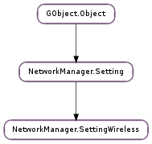

| static | new() |
| add_seen_bssid(bssid) | |
| ap_security_compatible(s_wireless_sec, ap_flags, ap_wpa, ap_rsn, ap_mode) | |
| get_band() | |
| get_channel() | |
| get_hidden() | |
| get_mode() | |
| get_mtu() | |
| get_num_seen_bssids() | |
| get_rate() | |
| get_security() | |
| get_seen_bssid(i) | |
| get_tx_power() |
| Name | Type | Flags | Description |
|---|---|---|---|
| band | str | r/w | 802.11 frequency band of the network. One of ‘a’ for 5GHz 802.11a or ‘bg’ for 2.4GHz 802.11. This will lock associations to the WiFi network to the specific band, i.e. if ‘a’ is specified, the device will not associate with the same network in the 2.4GHz band even if the network’s settings are compatible. This setting depends on specific driver capability and may not work with all drivers. |
| channel | int | r/w | Wireless channel to use for the WiFi connection. The device will only join (or create for Ad-Hoc networks) a WiFi network on the specified channel. Because channel numbers overlap between bands, this property also requires the ‘band’ property to be set. |
| bool | r/w | If True, indicates this network is a non-broadcasting network that hides its SSID. In this case various workarounds may take place, such as probe-scanning the SSID for more reliable network discovery. However, these workarounds expose inherent insecurities with hidden SSID networks, and thus hidden SSID networks should be used with caution. | |
| mode | str | r/w | WiFi network mode; one of ‘infrastructure’, ‘adhoc’ or ‘ap’. If blank, infrastructure is assumed. |
| mtu | int | r/w | If non-zero, only transmit packets of the specified size or smaller, breaking larger packets up into multiple Ethernet frames. |
| rate | int | r/w | If non-zero, directs the device to only use the specified bitrate for communication with the access point. Units are in Kb/s, ie 5500 = 5.5 Mbit/s. This property is highly driver dependent and not all devices support setting a static bitrate. |
| security | str | r/w | If the wireless connection has any security restrictions, like 802.1x, WEP, or WPA, set this property to ‘802-11-wireless-security’ and ensure the connection contains a valid 802-11-wireless-security setting. |
| tx-power | int | r/w | If non-zero, directs the device to use the specified transmit power. Units are dBm. This property is highly driver dependent and not all devices support setting a static transmit power. |
None
| Name | Type | Access |
|---|---|---|
| parent | NetworkManager.Setting | r |
Bases: NetworkManager.Setting
| Returns: | the new empty NetworkManager.SettingWireless object |
|---|---|
| Return type: | NetworkManager.Setting |
Creates a new NetworkManager.SettingWireless object with default values.
| Parameters: | bssid (str) – the new BSSID to add to the list |
|---|---|
| Returns: | True if bssid was already known, False if not |
| Return type: | bool |
Adds a new Wi-Fi AP’s BSSID to the previously seen BSSID list of the setting. NetworkManager now tracks previously seen BSSIDs internally so this function no longer has much use. Actually, changes you make using this function will not be preserved.
| Parameters: |
|
|---|---|
| Returns: | True if the given settings are compatible with the access point’s security flags and mode, False if they are not. |
| Return type: |
Given a NetworkManager.SettingWireless and an optional NetworkManager.SettingWirelessSecurity, determine if the configuration given by the settings is compatible with the security of an access point using that access point’s capability flags and mode. Useful for clients that wish to filter a set of connections against a set of access points and determine which connections are compatible with which access points.
| Returns: | the NetworkManager.SettingWireless :band property of the setting |
|---|---|
| Return type: | str |
| Returns: | the NetworkManager.SettingWireless :channel property of the setting |
|---|---|
| Return type: | int |
| Returns: | the NetworkManager.SettingWireless :hidden property of the setting |
|---|---|
| Return type: | bool |
| Returns: | the NetworkManager.SettingWireless :mode property of the setting |
|---|---|
| Return type: | str |
| Returns: | the NetworkManager.SettingWireless :mtu property of the setting |
|---|---|
| Return type: | int |
| Returns: | the number of BSSIDs in the previously seen BSSID list |
|---|---|
| Return type: | int |
| Returns: | the NetworkManager.SettingWireless :rate property of the setting |
|---|---|
| Return type: | int |
| Returns: | the NetworkManager.SettingWireless :security property of the setting |
|---|---|
| Return type: | str |
| Parameters: | i (int) – index of a BSSID in the previously seen BSSID list |
|---|---|
| Returns: | the BSSID at index i |
| Return type: | str |
| Returns: | the NetworkManager.SettingWireless :tx-power property of the setting |
|---|---|
| Return type: | int |